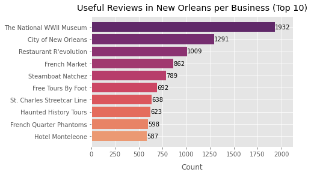

Wordcloud for activities:
Activities in Indianapolis:
Activities in New Orleans:
Activities map:
Wordcloud for beauty:
Beauty in Indianapolis:
Beauty in New Orleans:

Wordcloud for food:
Food in Indianapolis:
Beauty in New Orleans:
Wordcloud for health:
Health in Indianapolis:
Health in New Orleans:
Wordcloud for nightlife:
Nightlife in Indianapolis:
Nightlife in New Orleans:
Wordcloud for pets:
Pets in Indianapolis:
Pets in New Orleans:
Wordcloud for services:
Services in Indianapolis:
Services in New Orleans:

Wordcloud for stores:
Stores in Indianapolis:
Stores in New Orleans:
import geopandas as gpd
import folium
print('help')
world = gpd.read_file(gpd.datasets.get_path('naturalearth_lowres'))
cities = gpd.read_file(gpd.datasets.get_path('naturalearth_cities'))
m = world.explore(
column="pop_est", # make choropleth based on "BoroName" column
scheme="naturalbreaks", # use mapclassify's natural breaks scheme
legend=True, # show legend
k=10, # use 10 bins
legend_kwds=dict(colorbar=False), # do not use colorbar
name="countries" # name of the layer in the map
)
cities.explore(
m=m, # pass the map object
color="red", # use red color on all points
marker_kwds=dict(radius=10, fill=True), # make marker radius 10px with fill
tooltip="name", # show "name" column in the tooltip
tooltip_kwds=dict(labels=False), # do not show column label in the tooltip
name="cities" # name of the layer in the map
)
folium.TileLayer('Stamen Toner', control=True).add_to(m) # use folium to add alternative tiles
folium.LayerControl().add_to(m) # use folium to add layer control
m # show map